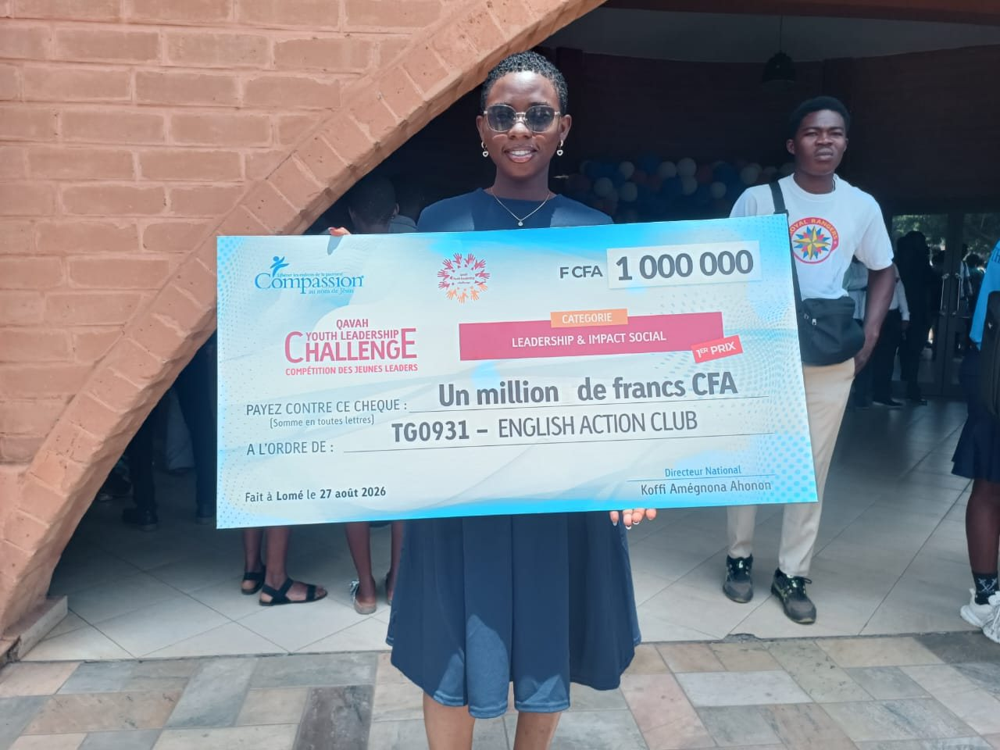
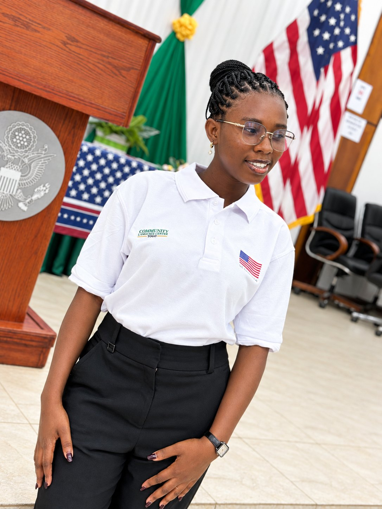
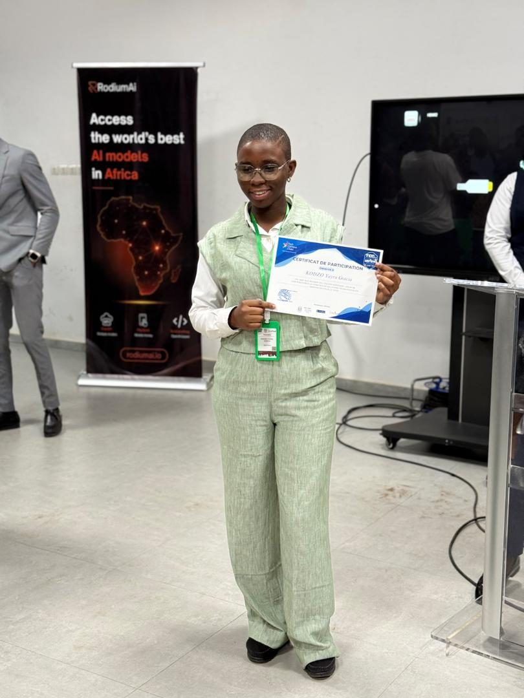
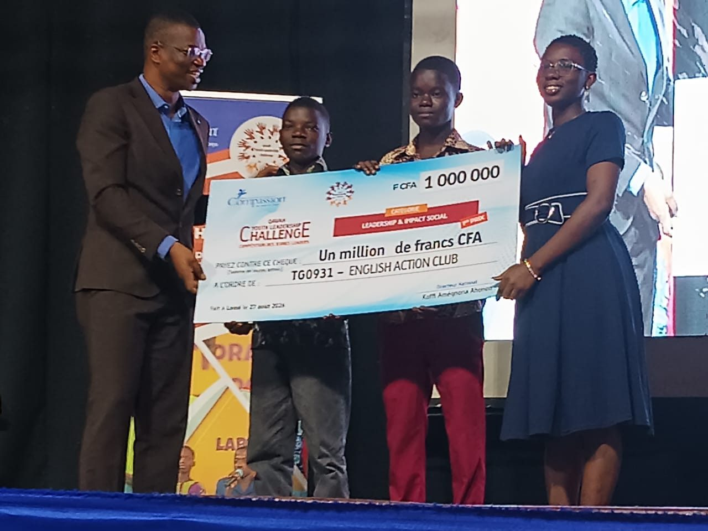
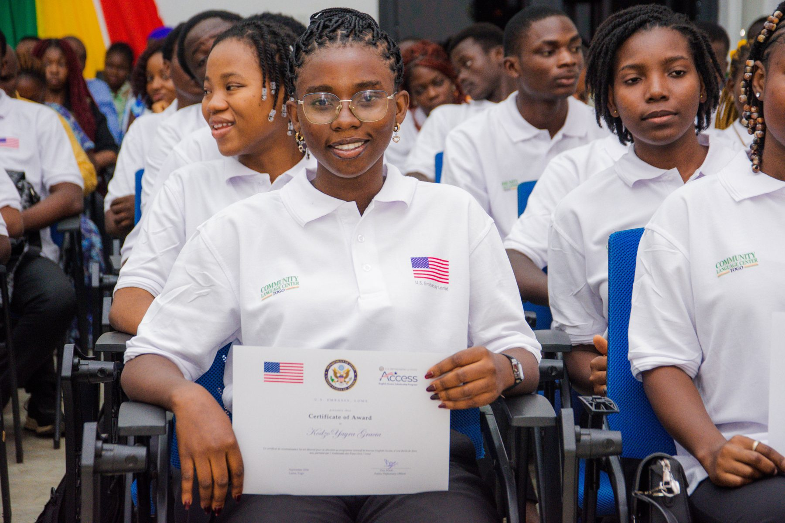

Hello, I'm
KODZO Yayra Gracia
Web & mobile development student · Founder of AgriFlash
Young leader committed to quality education, innovation and social impact.
Right now
English Access Program
2026–2028 scholarship recipient, U.S. Embassy in Lomé.
AgriFlash × NanaTech
Building the MVP within the NanaTech 2026 program.
Competitions & awards
1st place at QYLC 2026 (Leadership & Social Impact, 1,000,000 FCFA), 1st prize at TCC Hack & Defend 2026.
Startup Loop · Innov'Up
Support program for AgriFlash: training completed, coaching coming up.
My projects

AgriTech platformFounder · 2026
Connecting farmers and buyers to reduce post-harvest losses.
Read the case studyHANDOOArtisans–clients app
Technical lead · 2025–2026
Mobile app connecting clients with local artisans.
View projectEcoComfortReusable sanitary pads
Founder · 2026
Comfort, health and dignity for girls and women. Top 20, URBIS Foundation.
View projectAcadProSchool management
Communications & outreach · 2026
Outreach to more than 60 private schools in Lomé.
View projectMy journey & achievements
Education
- iPNet Institute of Technology, Lomé — Web & mobile development, 2nd year
- Baccalauréat, science track (série D), with honors (2025)
- 6 Cisco certificates · 6 HP LIFE modules · Microsoft AI Skills Fest
Leadership
- MoNaJeL — Deputy National Treasurer
- English Action Club — club lead
- CDEJ Béthel — program participant, tutoring younger children
- SHIFT community — facilitator
Awards
- QYLC 2026 — 1st place, Leadership & Social Impact, 1,000,000 FCFA (Aug 27)
- TCC Hack & Defend 2026 — 1st prize
- URBIS Foundation 2026 — Top 20
- Qavah Youth Challenge 2023 — 1st prize
Gallery








